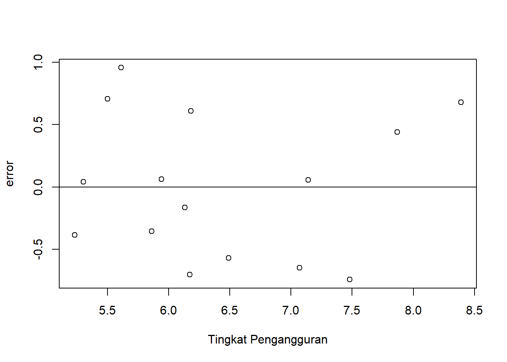
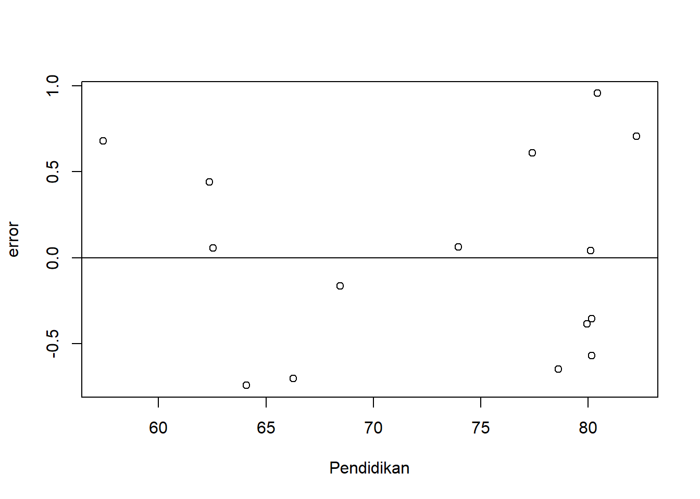

library(tidyverse)
library(readxl)Pengaruh Tingkat Pengangguran dan Pendidikan terhadap Kemiskinan
Metode Penelitian Politeknik APP Jakarta

1 Pendahuluan
1.1 Latar belakang
Kemiskinan adalah suatu keadaan dimana terjadi ketidakmampuan untuk memenuhi kebutuhan dasar setiap masyarakat yang saling berkaitan. Sampai saat ini pemerintah Indonesia belum mampu menghadapi atau menyelesaikan permasalahan tersebut, melainkan hanya dikurangi jumlah dan diminimalkan derita masyarakat miskin, demikian halnya dengan yang terjadi pada masyarakat.
Tingkat pengangguran dianggap menjadi salah satu faktor yang mempengaruhi tingkat kemiskinan suatu negara, sebab tanpa pekerjaan masyarakat tidak mampu memenuhi kebutuhan dasar mereka. Disamping itu tingkat pengangguran dipengaruhi oleh pendidikan, untuk mendapat pekerjaan setidaknya seorang pelamar harus tamat sekolah, hal ini kemudian berdampak pada angka kemiskinan.
1.2 Ruang lingkup
Ruang lingkup pembahasan masalah sesuai dengan variable yang akan digunakan pada analisis kali ini, yaitu mengenai pengaruh Tingkat Pengangguran dan Pendidikan terhadap Kemiskinan dari tahun 2008 sampai 2023. Batasan masalah ini berperan membantu dalam mengidentifikasi masalah yang akan dibahas dan membatasi jangkauan proses yang dibahas.
1.3 Rumusan masalah
- Apakah ada pengaruh Tingkat Pengangguran terhadap Kemiskinan
- Apakah ada pengaruh Pendidikan terhadap Kemiskinan
1.4 Tujuan dan manfaat penelitian
Tujuan penelitian ini untuk mengetahui pengaruhnya Tingkat Pengangguran dan Pendidikan di tahun terkait terhadap Kemiskinan di tahun terkait .
Manfaat penelitian ini agar masyarakat mengerti dan menambah wawasan adanya pengaruh Tingkat Pengangguran dan Pendidikan terhadap Kemiskinan.
1.5 Package
Packages yang digunakan antara lain sebagai berikut:
2 Studi pustaka
Kemiskinan muncul karena adanya ketimpangan distribusi pendapatan, adanya perbedaan kualitas sumber daya manusia yang menyebabkan adanya perbedaan pada tingkat upah, serta adanya perbedaan dalam pemenuhan modal, sehingga kemiskinan dapat digambarkan pada teori lingkaran kemiskinan. (Imelia, 2012).
Di dalam teori kemiskinan dijelaskan, bahwa kemiskinan merupakan persoalan individual yang disebabkan oleh kelemahan dan pilihan individu yang bersangkutan (teori Neo Liberal dari Shanon et. al) dan masyarakat menjadi miskin karena adanya budaya kemiskinan dengan karakter, apatis, kurang usaha, hanya menyerah pada nasib, sistem keuangan yang tidak mantap, kurang pendidikan, kurang ambisi untuk membangun masa depan, kesejahteraan dan kekerasan banyak terjadi (teori Marjinal dari Lewis) (Todaro, 2011).
3 Metode penelitian
3.1 Data
| Tahun | Tingkat Pengangguran | Pendidikan | Kemiskinan |
|---|---|---|---|
| 2008 | 8.39 | 57.42000 | 15.42 |
| 2009 | 7.87 | 62.37000 | 14.15 |
| 2010 | 7.14 | 62.53000 | 13.33 |
| 2011 | 7.48 | 64.09928 | 12.49 |
| 2012 | 6.13 | 68.45134 | 11.66 |
| 2013 | 6.17 | 66.27018 | 11.47 |
| 2014 | 5.94 | 73.95374 | 10.96 |
| 2015 | 6.18 | 77.39000 | 11.13 |
| 2016 | 5.61 | 80.43694 | 10.70 |
| 2017 | 5.50 | 82.24607 | 10.12 |
| 2018 | 5.30 | 80.11331 | 9.66 |
| 2019 | 5.23 | 79.93722 | 9.22 |
| 2020 | 7.07 | 78.61313 | 10.19 |
| 2021 | 6.49 | 80.17410 | 9.71 |
| 2022 | 5.86 | 80.17188 | 9.57 |
Penelitian ini menggunakan data sekunder dengan bentuk data time series 2008-2021, data yang dipakai ialah data yang telah diolah dengan sumber Badan Pusat Statistik.
setwd('C:/Users/Os 10/Documents/UAS Metopel')
library('readxl')
dat<-read_excel('data var.xlsx')
reg1<-lm(Y~X+S,data=dat)
dat$u<-resid(reg1)
plot(dat$X,dat$u,xlab="Tingkat Pengangguran",ylab="error")
abline(h=0)
Plot pengaruh error terhadap Tingkat Pengangguran
library('readxl')
dat$u<-resid(reg1)
plot(dat$S,dat$u,xlab="Pendidikan",ylab="error")
abline(h=0)
Plot pengaruh error terhadap Pendidikan
3.2 Metode analisis
Teknik analisis yang digunakakn dalam penelitian ini adalah teknik kuantitatif deskritif. Metode yang dipilih adalah regresi multivariat dengan 2 variabel independen yaitu tingkat pengangguran dan pendidikan dan 1 variabel dependen yaitu kemiskinan. Penelitian ini bertujuan untuk mencari hubungan antara Tingkat Pengangguran (X) dan Pendidikan (S) dengan Kemiskinan (Y). Spesifikasi yang dilakukan adalah:
\[ Y=\beta_0 + \beta_1 X+\beta_2 S +\mu \]
Dimana Y adalah Persentase Penduduk Miskin dan X adalah tingkat Pengangguran Terbuka dan S adalah Angka Partisipasi Kasar SMA.
4 Pembahasan
4.1 Pembahasan masalah
| Variabel | Coefficient | Std.Error | t-value | Prob (.) |
|---|---|---|---|---|
| Intercept | 18.5838 | 4.0566 | 4.581 | 0.000631 |
| X | 0.5625 | 0.2895 | 1.943 | 0.075902 |
| R squared | 0.9023 | |||
| Adjusted R-Squared | 0.886 | |||
| F-Statistic | 55.41 | |||
| Prob(F-statistic) | 8.696e-07 |
Hasil regresi yang telah didapat dimasukan ke dalam rumus persamaan yang ada sehingga menjadi:
\[ Y =\ 18.5838 + \ 0.5625 X+\ (-0.1491 S) \] Jika diasumsikan setiap kenaikan 1 nilai tingkat pengangguran 1, maka kemiskinan akan meningkat sebesar 0.5625. Dan jika diasumsikan setiap kenaikan nilai pendidikan 1, maka kemiskinan menurun sebesar 0.1491.
Nilai Adjusted R-squared sebesar 0.886 menjelaskan bahwa variabel independen dalam penelitian ini dapat menjelaskan variasi variabel dependen sebesar 88.6 persen. Nilai F-statistik sebesar 55.41 menunjukan variabel independent tidak memiliki pengaruh secara signifikan terhadap variabel dependen.
4.2 Analisis masalah
Hasil regresinya adalah
library(readxl)
dat<-read_excel('data var.xlsx')
reg1<-lm(Y~X,data=dat)
summary(reg1)
Call:
lm(formula = Y ~ X, data = dat)
Residuals:
Min 1Q Median 3Q Max
-2.1767 -0.3517 0.3004 0.6327 0.9119
Coefficients:
Estimate Std. Error t value Pr(>|t|)
(Intercept) 0.8969 1.7534 0.512 0.618
X 1.6223 0.2701 6.006 4.41e-05 ***
---
Signif. codes: 0 '***' 0.001 '**' 0.01 '*' 0.05 '.' 0.1 ' ' 1
Residual standard error: 0.973 on 13 degrees of freedom
Multiple R-squared: 0.7351, Adjusted R-squared: 0.7147
F-statistic: 36.07 on 1 and 13 DF, p-value: 4.406e-055 Kesimpulan
Tingkat pengangguran berperan pada peningkatan kemiskinan dapat dilihat dari variabel X yang positif, namun peningkatan kemiskinan tidak hanya dipengaruhi oleh tingkat pengangguran melainkan dipengaruhi juga oleh faktor lain. Variabel S yang negatif berarti pendidikan berpengaruh negatif pada kemiskinan, namun seperti tingkat pengangguran, kemiskinan menurun tidak hanya dipengaruhi oleh pendidikan.
6 Referensi
Susanto, R., & Pangesti, I., Pengaruh Pertumbuhan Ekonomi terhadap Tingkat Kemiskinan di Indonesia. Jurnal Ekonomi,Vol 7 No 2, 2020, hlm. 274.
Avrianti, A. E., Analisis Faktor-Faktor yang Mempengaruhi Kemiskinan di Kabupaten Sinjai. Jurnal Ekonomi, 2019, hlm. 2.